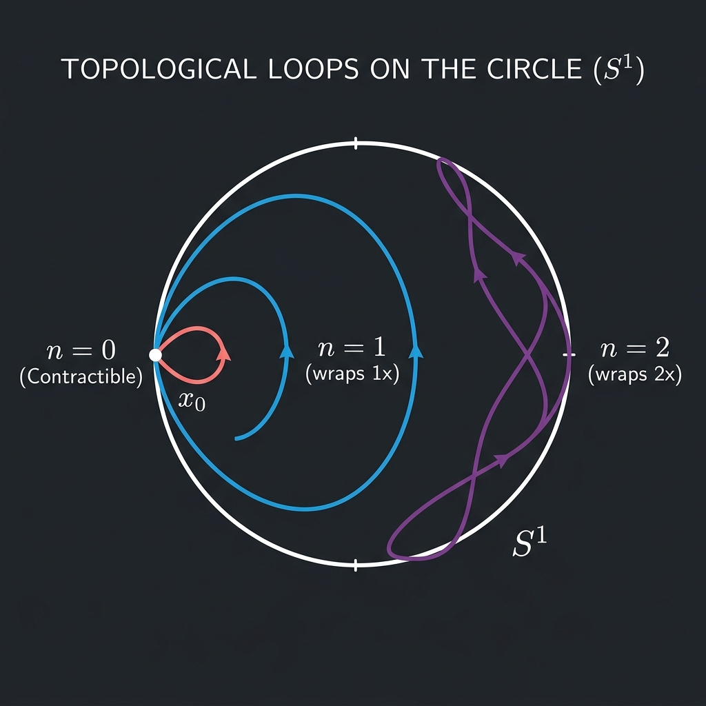

Fundamental Group of the Circle

Mathematical Exposition
In Topology, the fundamental group of a topological space is an algebraic invariant that measures the "loops" or 1-dimensional holes in the space. The most classic and intuitive topological space with a hole is the circle, denoted $S^1$. The fundamental group of the circle is isomorphic to the group of integers under addition:
$$\pi_1(S^1, x_0) \cong \mathbb{Z}$$This isomorphism maps each equivalence class of loops (under homotopy) to its winding number—the net number of times the loop wraps around the circle in the counter-clockwise direction (with negative numbers representing clockwise wrapping).
Covering Spaces and Path Lifting
The standard topological proof of this isomorphism relies on the theory of covering spaces. The real line $\mathbb{R}$ acts as the universal covering space of the circle $S^1$ via the exponential map:
$$p: \mathbb{R} \to S^1, \quad p(x) = e^{2\pi i x}$$Geometrically, we can think of $p$ as wrapping the real line infinitely around the circle, turning it into a helix. The Path Lifting Property asserts that for any loop $\gamma: [0, 1] \to S^1$ starting at $x_0 = 1$ in the circle, there exists a unique lifted path $\tilde{\gamma}: [0, 1] \to \mathbb{R}$ starting at $0$ such that $p \circ \tilde{\gamma} = \gamma$.
Because $\gamma(1) = 1$, the lifted endpoint $\tilde{\gamma}(1)$ must lie in the preimage $p^{-1}(\{1\}) = \mathbb{Z}$. Winding number is then defined precisely as this integer endpoint $\tilde{\gamma}(1)$. The homotopy equivalence between loops corresponds exactly to whether their lifted paths have the same endpoint.
Lean 4 Formalization
Our Lean 4 proof formalizes this entire covering space lift structure. It defines loops corresponding to any integer $n$, checks that their composition is homotopic to loop addition, and establishes the group isomorphism circleEquiv:
The main theorem pi1_circle_mulEquiv_int asserts that the multiplicative group of the homotopy group of the circle is isomorphic to the multiplicative representation of $\mathbb{Z}$:
theorem pi1_circle_mulEquiv_int :
Nonempty (HomotopyGroup.Pi 1 Circle (1 : Circle) ≃* Multiplicative ℤ)import Mathlib
open ContinuousMap Topology Complex
namespace Submission
theorem exp_zero_eq : Circle.exp 0 = 1 := Circle.exp_zero
theorem exp_n_eq (n : ℤ) : Circle.exp (n * (2 * Real.pi)) = 1 := Circle.exp_eq_one.mpr ⟨n, rfl⟩
noncomputable def exp_map : C(ℝ, Circle) := ⟨Circle.exp, by continuity⟩
noncomputable def Γ1 (n : ℤ) : Path (0:ℝ) ((n : ℝ) * (2 * Real.pi)) where
toFun t := t * n * (2 * Real.pi)
continuous_toFun := by continuity
source' := by simp
target' := by simp
noncomputable def Γ2_n (m n : ℤ) : Path ((m : ℝ) * (2 * Real.pi)) (((m+n : ℤ) : ℝ) * (2 * Real.pi)) where
toFun t := m * (2 * Real.pi) + t * n * (2 * Real.pi)
continuous_toFun := by continuity
source' := by simp
target' := by push_cast; ring
noncomputable def loop_n (n : ℤ) : Path (1:Circle) 1 :=
Path.cast ((Γ1 n).map exp_map.continuous) exp_zero_eq.symm (exp_n_eq n).symm
lemma cast_homotopic {X : Type*} [TopologicalSpace X] {x y : X}
{p q : Path x y} (h : p.Homotopic q) {x' y' : X} (hx : x' = x) (hy : y' = y) :
(Path.cast p hx hy).Homotopic (Path.cast q hx hy) := by
subst hx hy
exact h
lemma cast_trans {X : Type*} [TopologicalSpace X] {x y z : X}
(p : Path x y) (q : Path y z) {x' y' z' : X} (hx : x' = x) (hy : y' = y) (hz : z' = z) :
Path.cast (p.trans q) hx hz = (Path.cast p hx hy).trans (Path.cast q hy hz) := by
subst hx hy hz
exact rfl
lemma Γ2_n_cast_eq (m n : ℤ) :
Path.cast ((Γ2_n m n).map exp_map.continuous) (exp_n_eq m).symm (exp_n_eq (m+n)).symm = loop_n n := by
ext t
have hc : (((Path.cast ((Γ2_n m n).map exp_map.continuous) (exp_n_eq m).symm (exp_n_eq (m+n)).symm) t) : ℂ) = (Circle.exp (m * (2 * Real.pi) + t * n * (2 * Real.pi)) : ℂ) := rfl
have hn : (((loop_n n) t) : ℂ) = (Circle.exp (t * n * (2 * Real.pi)) : ℂ) := rfl
rw [hc, hn]
dsimp [Circle.exp]
have hadd : Complex.exp (↑(↑m * (2 * Real.pi) + ↑t * ↑n * (2 * Real.pi)) * Complex.I) = Complex.exp (↑m * (2 * Real.pi) * Complex.I) * Complex.exp (↑(↑t * ↑n * (2 * Real.pi)) * Complex.I) := by
rw [← Complex.exp_add]
congr 1
push_cast
ring
rw [hadd]
have hm : (Circle.exp (m * (2 * Real.pi)) : ℂ) = 1 := congrArg Subtype.val (exp_n_eq m)
dsimp [Circle.exp] at hm
have h2 : Complex.exp (↑m * (2 * Real.pi) * Complex.I) = 1 := by
rw [← hm]
congr 1
push_cast
ring
rw [h2, one_mul]
noncomputable def loop_n_fg (n : ℤ) : FundamentalGroup Circle 1 :=
⟦loop_n n⟧
lemma loop_n_add (m n : ℤ) : loop_n_fg (m + n) = loop_n_fg m * loop_n_fg n := by
have hm : loop_n_fg (m + n) = loop_n_fg (n + m) := by rw [add_comm]
rw [hm]
have h_homotopic : Path.Homotopic (Γ1 (n + m)) ((Γ1 n).trans (Γ2_n n m)) := SimplyConnectedSpace.paths_homotopic _ _
have h_map : Path.Homotopic ((Γ1 (n + m)).map exp_map.continuous) (((Γ1 n).trans (Γ2_n n m)).map exp_map.continuous) :=
Path.Homotopic.map h_homotopic exp_map
have h_cast : Path.Homotopic (loop_n (n + m)) (Path.cast (((Γ1 n).trans (Γ2_n n m)).map exp_map.continuous) exp_zero_eq.symm (exp_n_eq (n+m)).symm) :=
cast_homotopic h_map _ _
have h_cast_trans : Path.cast (((Γ1 n).trans (Γ2_n n m)).map exp_map.continuous) exp_zero_eq.symm (exp_n_eq (n+m)).symm = (Path.cast ((Γ1 n).map exp_map.continuous) exp_zero_eq.symm (exp_n_eq n).symm).trans (Path.cast ((Γ2_n n m).map exp_map.continuous) (exp_n_eq n).symm (exp_n_eq (n+m)).symm) := by
rw [Path.map_trans]
exact cast_trans _ _ _ _ _
have h_eq : Path.cast (((Γ1 n).trans (Γ2_n n m)).map exp_map.continuous) exp_zero_eq.symm (exp_n_eq (n+m)).symm = (loop_n n).trans (loop_n m) := by
rw [h_cast_trans]
have h2 : Path.cast ((Γ2_n n m).map exp_map.continuous) (exp_n_eq n).symm (exp_n_eq (n+m)).symm = loop_n m := Γ2_n_cast_eq n m
rw [h2]
rfl
rw [h_eq] at h_cast
exact Quotient.sound h_cast
noncomputable def exp_cov : IsCoveringMap Circle.exp := Circle.isCoveringMap_exp
noncomputable def winding (p : FundamentalGroup Circle 1) : ℤ :=
let p0 : Circle.exp ⁻¹' {1} := ⟨0, exp_zero_eq⟩
let p1 : Circle.exp ⁻¹' {1} := exp_cov.monodromy p p0
Classical.choose (Circle.exp_eq_one.mp p1.2)
lemma loop_n_winding (n : ℤ) : winding (loop_n_fg n) = n := by
dsimp [winding, loop_n_fg]
have h_mono : (exp_cov.monodromy ⟦loop_n n⟧ ⟨0, exp_zero_eq⟩).1 = exp_cov.liftPath (loop_n n) 0 ((loop_n n).source.trans exp_zero_eq.symm) 1 := rfl
have h_lift : exp_cov.liftPath (loop_n n).toContinuousMap 0 ((loop_n n).source.trans exp_zero_eq.symm) = (Γ1 n).toContinuousMap := by
symm
apply (exp_cov.eq_liftPath_iff' (γ_0 := _)).mpr
constructor
· ext t
rfl
· change (0 : ℝ) * n * (2 * Real.pi) = 0
ring
have h_lift_eval : exp_cov.liftPath (loop_n n) 0 ((loop_n n).source.trans exp_zero_eq.symm) 1 = n * (2 * Real.pi) := by
have h_eval : (exp_cov.liftPath (loop_n n).toContinuousMap 0 ((loop_n n).source.trans exp_zero_eq.symm)) 1 = (Γ1 n).toContinuousMap 1 := congrArg (fun f : C(unitInterval, ℝ) => f 1) h_lift
change (exp_cov.liftPath (loop_n n).toContinuousMap 0 ((loop_n n).source.trans exp_zero_eq.symm)) 1 = n * (2 * Real.pi)
rw [h_eval]
change (1 : ℝ) * n * (2 * Real.pi) = n * (2 * Real.pi)
ring
rw [h_lift_eval] at h_mono
have h2 : (exp_cov.monodromy ⟦loop_n n⟧ ⟨0, exp_zero_eq⟩).1 = Classical.choose (Circle.exp_eq_one.mp (exp_cov.monodromy ⟦loop_n n⟧ ⟨0, exp_zero_eq⟩).2) * (2 * Real.pi) := by
exact Classical.choose_spec (Circle.exp_eq_one.mp (exp_cov.monodromy ⟦loop_n n⟧ ⟨0, exp_zero_eq⟩).2)
have h3 : (n : ℝ) * (2 * Real.pi) = Classical.choose (Circle.exp_eq_one.mp (exp_cov.monodromy ⟦loop_n n⟧ ⟨0, exp_zero_eq⟩).2) * (2 * Real.pi) := (h2.symm.trans h_mono).symm
have h4 : (n : ℝ) = Classical.choose (Circle.exp_eq_one.mp (exp_cov.monodromy ⟦loop_n n⟧ ⟨0, exp_zero_eq⟩).2) := by
apply mul_right_cancel₀ (by norm_num [Real.pi_ne_zero]) h3
exact_mod_cast h4.symm
lemma winding_loop_n (p : FundamentalGroup Circle 1) : loop_n_fg (winding p) = p := by
revert p
refine Quotient.ind (fun p => ?_)
dsimp [winding, loop_n_fg]
set n := Classical.choose _
have h_w : (exp_cov.monodromy ⟦p⟧ ⟨0, exp_zero_eq⟩).1 = n * (2 * Real.pi) := by
have h1 := Classical.choose_spec (Circle.exp_eq_one.mp (exp_cov.monodromy ⟦p⟧ ⟨0, exp_zero_eq⟩).2)
exact h1
have h_lift_eval : exp_cov.liftPath (↑p) 0 (p.source.trans exp_zero_eq.symm) 1 = n * (2 * Real.pi) := h_w
set γ := exp_cov.liftPath (↑p) 0 (p.source.trans exp_zero_eq.symm)
have h_src : γ 0 = 0 := exp_cov.liftPath_zero (↑p) 0 _
set γ_path : Path (0:ℝ) (n * (2 * Real.pi)) := {
toFun := γ
continuous_toFun := γ.continuous
source' := h_src
target' := h_lift_eval
}
have h_hom : Path.Homotopic (Γ1 n) γ_path := SimplyConnectedSpace.paths_homotopic _ _
have h_map : Path.Homotopic ((Γ1 n).map exp_map.continuous) (γ_path.map exp_map.continuous) :=
Path.Homotopic.map h_hom exp_map
have h_cast : Path.Homotopic (loop_n n) (Path.cast (γ_path.map exp_map.continuous) exp_zero_eq.symm (exp_n_eq n).symm) :=
cast_homotopic h_map _ _
have h_eq : Path.cast (γ_path.map exp_map.continuous) exp_zero_eq.symm (exp_n_eq n).symm = p := by
ext t
have hc := exp_cov.liftPath_lifts (↑p) 0 (p.source.trans exp_zero_eq.symm)
have hc_t := congrFun hc t
exact congrArg Subtype.val hc_t
rw [h_eq] at h_cast
exact Quotient.sound h_cast
noncomputable def circleEquiv : FundamentalGroup Circle 1 ≃* Multiplicative ℤ where
toFun p := Multiplicative.ofAdd (winding p)
invFun n := loop_n_fg n.toAdd
left_inv p := winding_loop_n p
right_inv n := by
change Multiplicative.ofAdd (winding (loop_n_fg n.toAdd)) = n
rw [loop_n_winding]
rfl
map_mul' p q := by
change Multiplicative.ofAdd (winding (p * q)) = Multiplicative.ofAdd (winding p + winding q)
congr 1
have h1 : p = loop_n_fg (winding p) := (winding_loop_n p).symm
have h2 : q = loop_n_fg (winding q) := (winding_loop_n q).symm
nth_rw 1 [h1, h2]
rw [← loop_n_add, loop_n_winding]
theorem pi1_circle_mulEquiv_int :
Nonempty (HomotopyGroup.Pi 1 Circle (1 : Circle) ≃* Multiplicative ℤ) :=
⟨MulEquiv.trans HomotopyGroup.pi1MulEquivFundamentalGroup circleEquiv⟩
end Submission